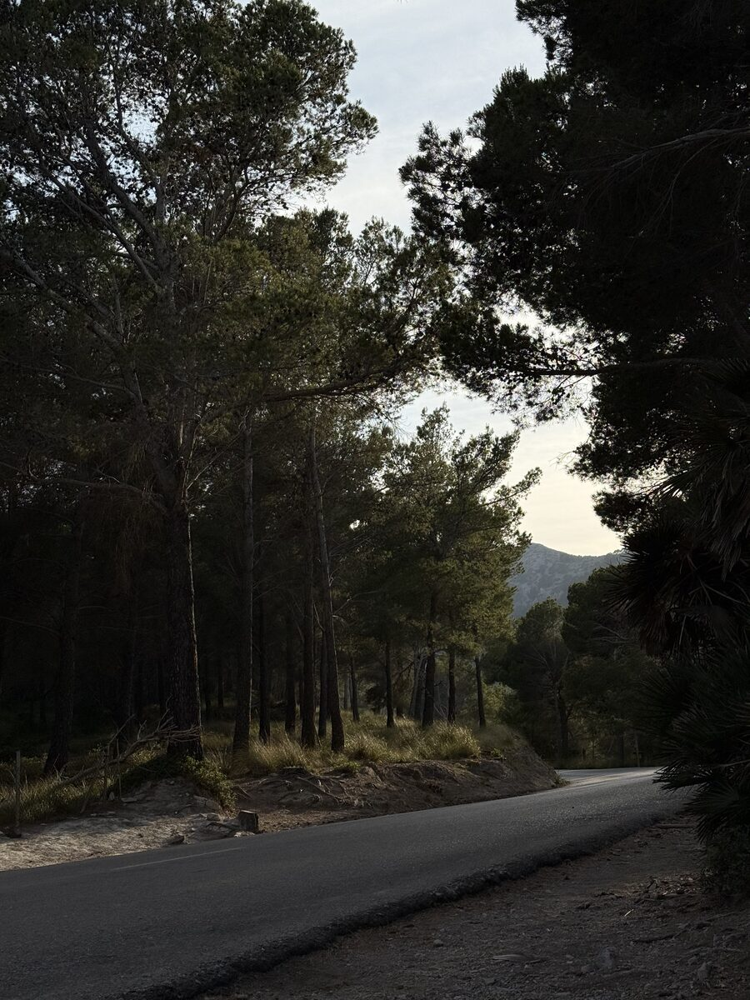

Приватна практика · Онлайн · 18+
Розібратися зі станом — спокійно і без тиску
Якщо тривожно, важко або «не як раніше» — знайдемо наступний крок разом.
- Ліки — не обовʼязково
- Конфіденційно
- Можна з близькою людиною
- 18+ · 1 година
- тривога
- панічні атаки
- безсоння
- вигорання
- СДУГ у дорослих
- депресивні стани
- ПТСР
- психосоматика
- розлади адаптації
- біполярний розлад
Коли варто звернутися
З чим можна прийти
Не обовʼязково знати назву свого стану. Достатньо відчувати, що вам потрібні пояснення і підтримка.
- Тривога та панічні атаки
- Депресивні стани
- Безсоння
- Вигорання та стрес
- ПТСР та розлади адаптації
- Психосоматичні симптоми
- Біполярний афективний розлад
- Розлади особистості
- Медикаментозне лікування
- Діагностую й лікую СДУГ у дорослих
Приймаю дорослих від 18 років. Не працюю із залежностями та РАС.

Про мене
«Для мене важливо створити простір, де людина почувається безпечно, щоб говорити про свій досвід без тиску й оцінювання»
Марта Хомченко
Більше про менеПерша консультація
Спокійна розмова, а не іспит
- I
Я уважно розпитаю про ваш стан і те, що турбує зараз.
- II
Якщо буде потреба — призначу додаткові обстеження.
- III
Разом підберемо лікування. Ліки — не обовʼязково.
Хвилина для себе
Якщо зараз тривожно — почніть із видиху
Вдих на 4, довгий видих на 6. Шість разів — приблизно хвилина. Це не лікування, а пауза.
Коли будете готові
Запис
Зустрінемося онлайн
Приватна консультація для дорослих від 18 років. Зустріч триває одну годину та проходить у Google Meet.
Напишіть мені в Telegram — узгодимо час особисто. Автоматичний запис ще не підключено.
Узгодити час у TelegramСкасувати чи перенести — щонайменше за 48 годин. Консультація не замінює невідкладну допомогу.
Комфорт
Налаштуйте сайт під себе
Звуки й вібрація вимкнені, доки ви їх не ввімкнете. Вибір запамʼятається на цьому пристрої.